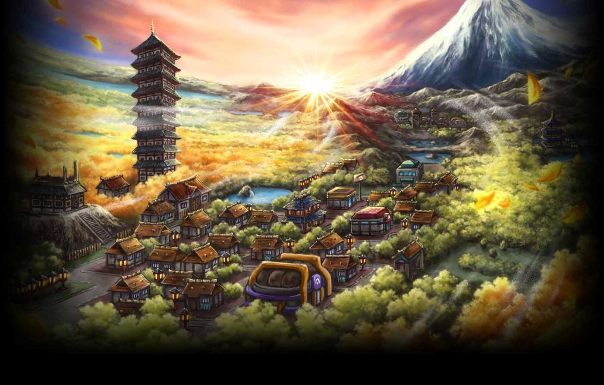

Nosso projeto:
Esse site é voltado para o públicop que é fã da franquia pokémon, aqui você encontrará tudo sobre os jogos, desde dicas e gameplays.
Nesse caso estamos fazendo um especial do jogo pokemon HEART GOLD & SOUL SILVER. Iremos comentar sobre o Jogo, sua história, a dificulade, as mecânicas novas que foram inseridas, além de comentar sobre o pós game e os eventos que era possível de serem realizados.
Espero que gostem muito do nosso conteúdo e sempre voltem para poder observar a evolução desse nosso projeto que está sendo feito com muito carinho.
